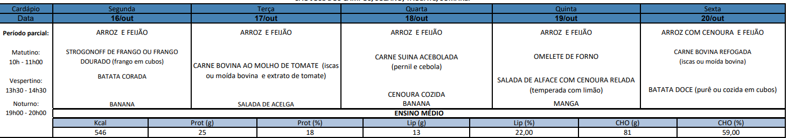

Não ao desperdício da merenda escolar!

Formulário - Alimento Consciente
Nome Completo
Período:
Manhã
Tarde
Noite
Aceita uma refeição?
Sim
Não
Enviar
Consequências globais, sociais, econômicas e ambientais. Segundo a Organização das Nações Unidas para Agricultura e Alimentação, o Brasil encontra-se em décimo lugar no ranking de países que mais desperdiçam alimentos diariamente. A alimentação é um direito social de todos. Uma alimentação saudável, nutritiva e equilibrada é o básico e deve ser dado a todos. Nos dias de hoje é muito difícil para as populações adotar hábitos alimentares mais saudáveis, seja pela falta de informação ou de condições financeiras, por isso precisamos adotar medidas para o não desperdicio alimentar. O presente estudo visa responder a seguinte questão “Como evitar o desperdício”.
© 2023 Alimento Consciente. Todos os direitos reservados®